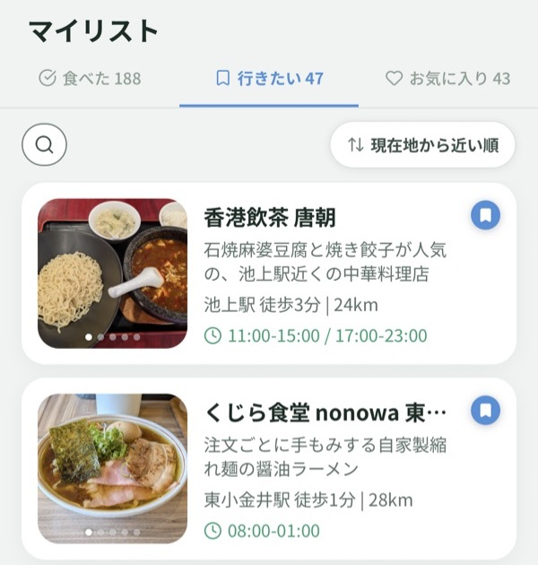
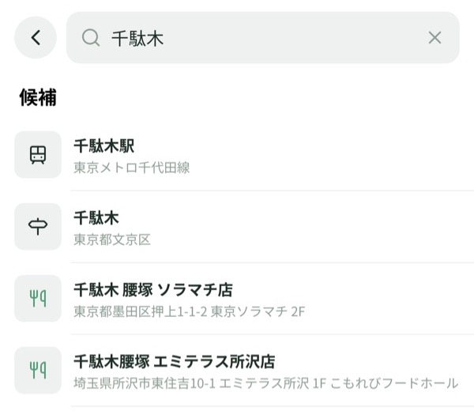

「行きたい」から、今日行くお店を見つけやすくなりました
01
「行きたい」を現在地から近い順に
マイリストの「行きたい」を、現在地から近い順に並べ替えられるようになりました。営業時間や現在地からの距離も一覧で確認できるので、保存したお店を見比べながら、これから行くお店を探せます。

02
駅名・エリア名でマップを検索
マップの検索が、店名に加えて駅名やエリア名にも対応しました。候補から駅やエリアを選ぶと、その場所へマップを移動できます。これから向かう駅の周辺も、地図を手で動かさずに探せます。

03
食べた記録を削除できるように
マイリストの「食べた」で、記録の鉛筆アイコンから修正画面を開き、右上の「削除」から削除できます。間違えて登録した記録などの整理にご利用ください。